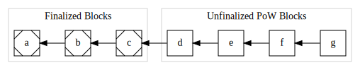
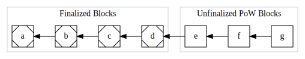
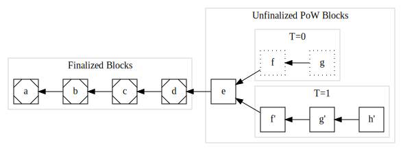

Visualizing Trailing Finality
In the previous chapter we visualized a node's view of consensus in PoW and a valid rollback transition. When we consider a protocol combinging PoW with trailing finality, there are multiple possible transitions:
- PoW can make progress on discovering a new block,
- finality can make progress on finalizing a previously found block, and
- finality-constrained PoW rollbacks can occur.
However, unbounded PoW rollbacks may not occur, although they are valid in pure PoW.
Let's visualize a node's view of consensus through each of these kinds of transition to gain an intuition of the intended protocol's behavior.
Starting State
Let's begin at T=0 with a known-valid starting state:

This represents a sequence of blocks, similar to the first diagram in the previous chapter, except now we distinguish between finalized blocks (which have corner markings) and unfinalized PoW blocks.
In the intended protocol design, both PoW mining and finalization processes are concurrently making progress, so from this starting state we can observe either valid PoW mining progress or valid finaliztion progress.
Let's examine PoW progress first:
PoW Progress
At T=1 a new valid PoW block g has arrived:

Again, from this state either PoW or finality may make progress. For this example, let's assume finality makes progress next:
Finality Progress
At T=2 block d has become final:

PoW Rollback
Just as in vanilla PoW, rollbacks are possible so long as they involve no finalized blocks. To illustrate, we envision at T=3 the node discovers a new best PoW sequence endeing at h':

The blocks f and g from T=2 have been rolled back in favor of the sequence of f' → g' → h'. Because no final blocks are rolled back, this is a valid transition, just as for vanilla PoW.
Now let's consider an invalid attempt to rollback a final block:
An Invalid Finality Rollback
At T=4 the node learns of a new sequence ending in i'' where each header in the Proof-of-Work sequence is valid and demonstrates sufficient work accoring to pure PoW consensus:

The sequence d'' → e'' → f'' → g'' → h'' → i'' is invalid and rejected by the node because although it meets all PoW requirements, it does not extend from the most recent final block d and attempts to roll it back via d''.
Summary
Visualizing these possible transitions of a PoW-with-Trailing-Finality protocol helps provide an intuition about the intended protocols behavior.